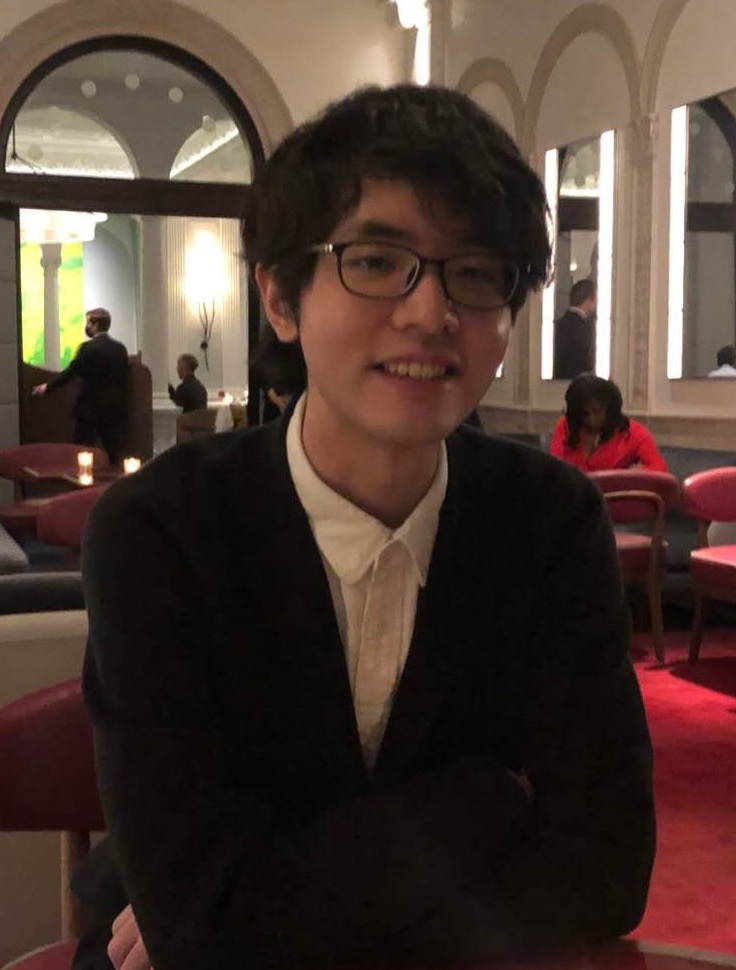

Zhixiang Min
I received my Ph.D. (2018-2023) in Computer Science at Stevens Institute of Technology, advised by Prof. Enrique Dunn. I spent summer internships at Zillow and NEC Labs.
My research interest lies in 3D computer vision (SfM, SLAM, localization, reconstruction) and recently image-based rendering. My work during PhD focuses on closing the gap between deep learning methods and 3D vision problems. Specifically, I design localization algorithms that utilize deep learning to improve challenging instances and solve ill-posed problems, while, importantly, maintaining the geometric interpretabilities.
After graduation, I joined Apple VIO/SLAM team, working on AR/VR and Vision Pro.
Email: zmin1 [at] stevens.edu
[Google Scholar] / [LinkedIn] / [CV]